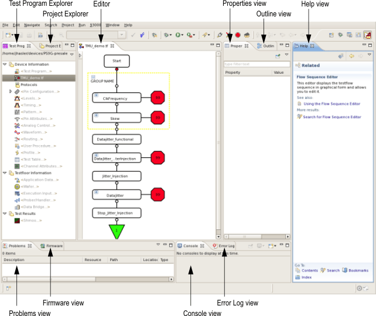

Setup perspective
The setup perspective is the default perspective, which is active when SmarTest is started for the first time. The setup perspective contains the views necessary to edit the SmarTest setup data.
For more information on available perspectives and how you can customize a perspective, see Perspectives.

The setup perspective includes the following views:
- Test Program Explorer
In this view the logical structure of all test data is displayed hierarchically. From the test program explorer view you start all tools to edit your device setup data.
- Project Explorer
This view shows your test method projects and classes in a tree structure. It allows easy navigation to the desired program code. You can create a new test method project and class from this view.
- Properties
- This view shows the properties of an object that you are highlighting. For example, the location and modified date of a test method project. For examples, see Pattern editor properties view or Testflow Properties view.
- Outline
This view displays an outline of a file which is opened in the editor. The content shown in this view is specific to the current editor.
- Help view
The Help view is based on the TDC Viewer and can show context sensitive help (press Shift+F1) and the online help. To open the TDC Viewer on the menu click .
- Problems View
This view shows errors or warnings and the locations of them in the list form. If you double-click an error in the list, the cursor moves to the line with the error in the editor
- Firmware view
You can execute firmware commands on this view.
- Console view
This View displays errors that are associated with a particular test system resource (test data component).
- Error Log View
This view displays displays all errors coming form the test system and from Eclipse plug-ins.
Functional changes
- Introduced before SmarTest 6.3.2
- SmarTest 6.5.2: The Firmware view is visible by default